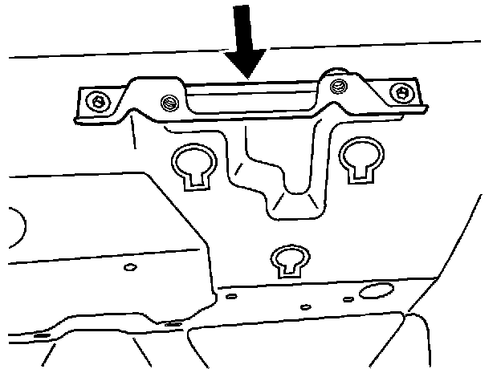
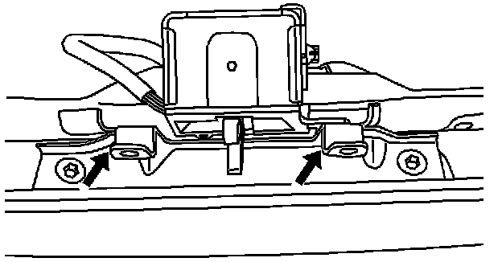
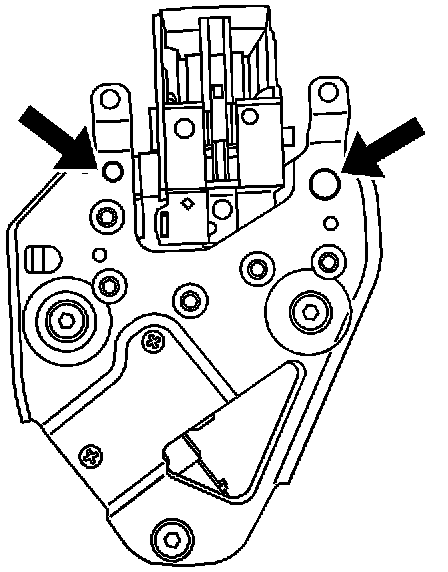
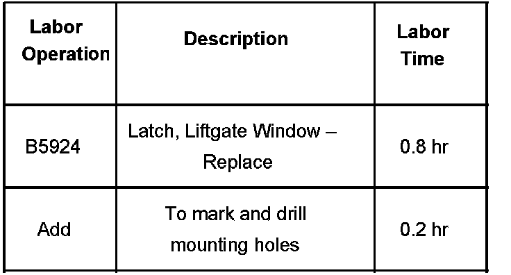

Body - Liftgate Window Latch Replacement Procedure
Bulletin No.: 07-08-66-005ADate: June 12, 2007
INFORMATION
Subject:
Procedure for Liftgate Window Latch Assembly Replacement for Vehicles with Separate L-Bracket
Models:
2007 Cadillac Escalade, Escalade ESV
2007 Chevrolet Suburban, Tahoe
2007 GMC Yukon, Yukon XL
Vehicles Built Between 10/17/2006 and 12/23/2006
Supercede:
This bulletin is being revised to change the affected vehicle build dates. Please discard Corporate Bulletin Number 07-08-66-005 (Section 08 - Body and Accessories).

Vehicles built between the above dates have an L-bracket that is separate from the latch and liftgate assembly. If the latch needs to be replaced, the following procedure should be followed. Refer to the illustration above.
Remove the liftgate trim panel.
Remove the liftgate window latch, leaving the L-bracket attached to liftgate inner panel.

Mount the new latch to the liftgate and use a scribe to mark the location of the L-bracket holes on the new latch through the L-bracket. Refer to the illustration above.

Remove the latch and drill two holes, one 11.2 mm (3/8 in) and one 7 mm (9/32 in). Refer to the illustration above.
Apply anti-corrosion material to any exposed bare metal in drilled holes. Refer to the 2007 GM Approved Refinish Materials booklet (GM 4901 MD-2007) for specific products. To access the booklet:
Go to www.gmgoodwrench.com.
Click on GM Parts & Accessories.
Click on GM Collision Parts.
Click on the Collision Technical Repair Information link.
Select the Paint Shop tab.
Apply Medium Strength Threadlocker 88861427 (in Canada, 88861428) to the two L-bracket bolts before reusing.
Mount the latch to the liftgate.
Adjust the latch as necessary and tighten all fasteners.
Reinstall the liftgate trim panel.
Warranty Information

For vehicles repaired under warranty, use the table.

Disclaimer